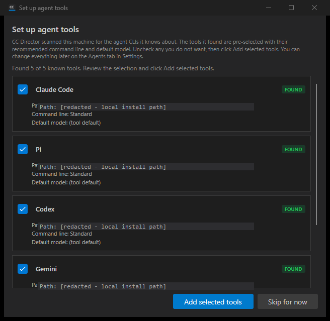
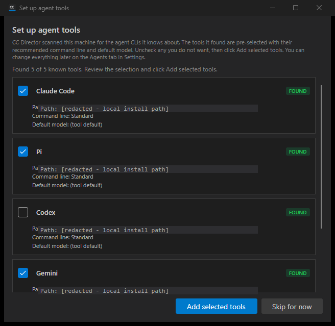
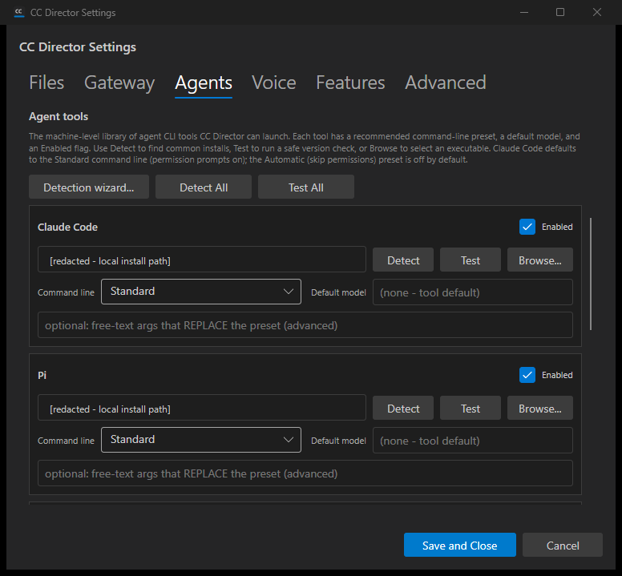

Developer Agent proof. A first-run wizard auto-opens on the Director desktop when no agent tools
are configured, scans for known catalog tools via the existing ToolDetectionService,
auto-suggests found tools pre-filled with the recommended Standard command line + default model
(issue #391's catalog), lets the user deselect before accepting, writes accepted tools to the
machine-level config.json, can be re-run from the Agents tab in Settings, does not
re-trigger once configured, and never auto-adds --dangerously-skip-permissions.
IsFirstRun() (true when agent.tools is absent/empty in config.json),
ScanSuggestions() (one suggestion per catalog tool, reusing
ToolDetectionService.DetectTool), and AcceptSelected() (writes the
selected tools via AgentToolConfig.FromCatalogDefaults().Save() plus the detected
path under agent.<key>_path; never skip-permissions).MaybeShowToolDetectionWizard() at
the end of MainWindow_Loaded auto-opens the wizard on first run only.| Criterion | Result | Proof |
|---|---|---|
| On a machine with no tools configured, launching shows the wizard automatically. | PASS | Log: IsFirstRun: result=True -> ToolDetectionWizardDialog Constructor. Screenshot 01. |
| The wizard scans and lists every known catalog tool with a found / not-found status. | PASS | Log: ScanAsync: found=5, total=5. Screenshot 01 lists all 5 with FOUND badges. |
| Found tools pre-checked + pre-filled with recommended command line + default model; not-found shown but not auto-added. | PASS | Screenshot 01 - each found card shows a checked box, "Command line: Standard", "Default model: (tool default)". |
| The user can deselect a suggested tool before accepting; a deselected tool is NOT written to config. | PASS | Screenshot 02 (Codex unchecked). config-after-accept.json contains claude/pi/gemini/opencode but NOT codex. |
| Accepting writes the selected tools to machine-level config.json, and they appear on the Tools page. | PASS | config-after-accept.json under agent.tools. Screenshot 03 - the Agents tab shows the added tools. |
| The wizard does not re-trigger automatically on the next launch once tools are configured, and can be re-opened manually from the Tools page. | PASS | Second-launch log: IsFirstRun: result=False + tools already configured; not auto-opening. Screenshot 03 shows the "Detection wizard..." re-run button; invoking it re-opened the wizard (wizard-reopened-from-settings=True). |
No tool is auto-added with --dangerously-skip-permissions; suggested Claude uses the standard command line. |
PASS | config-after-accept.json: Claude "preset": "Standard", no skip-permissions anywhere. Unit test AcceptSelected_Claude_NeverWritesSkipPermissions. |



Codex was deselected so it is absent. Claude is Standard (no skip-permissions). Local usernames in detected paths are redacted for this public repo; the live file held the real paths.
{
"agent": {
"tools": {
"claude": { "preset": "Standard", "args_override": "", "default_model": "", "enabled": true },
"pi": { "preset": "Standard", "args_override": "", "default_model": "", "enabled": true },
"gemini": { "preset": "Standard", "args_override": "", "default_model": "", "enabled": true },
"opencode": { "preset": "Standard", "args_override": "", "default_model": "", "enabled": true }
},
"claude_path": "C:\\Users\\USER\\.local\\bin\\claude.EXE",
"pi_path": "D:\\Tools\\Pi\\pi.exe",
"gemini_path": "C:\\Users\\USER\\AppData\\Roaming\\npm\\gemini.cmd",
"opencode_path": "C:\\Users\\USER\\AppData\\Roaming\\npm\\opencode.CMD"
}
}
dotnet build cc-director.sln - Build succeeded, 0 Warnings, 0 Errors (worktree).ToolDetectionWizardModelTests.CC_DIRECTOR_ROOT so it was a true first run), torn down after.No architecture or security drift. Reuses existing containers (CcDirector.Core, CcDirector.Avalonia) and the existing config writer; machine-level config write only, no new security surface, no gateway call.
I believe this is finished.